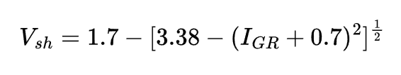

Volume de Shale (Clavier - 1971)
Clavier (1971) propôs uma equação para o cálculo de volume de shale com uma expressão mais complexa quando comparada a outros autores:
Onde:
- IGR - Índice de gamma ray;
- Vsh - Volume de Shale;
| Calcular o Volume de Shale (Vsh) - Clavier (1971) | |||
|---|---|---|---|